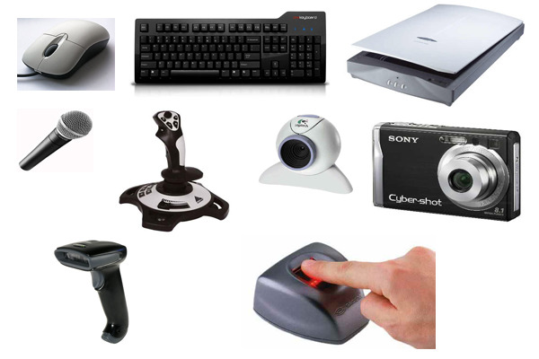

หน่วยรับข้อมูล

ส่วนรับข้อมูล (Input Unit) เป็น ส่วนประกอบของคอมพิวเตอร์ ที่ทำหน้าที่รับข้อมูลจากคน และส่งต่อข้อมูลไปยัง
หน่วยประมวลผล(Process Unit) เพื่อทำการประมวลผลต่อไป รูปแบบการส่งข้อมูลจากอุปกรณ์รับข้อมูลจะอยู่ในรูป
ของการส่งสัญญาณเป็นรหัสดิจิตอล (หรือเป็นเลข 0 กับ 1) นั่นเอง อุปกรณ์ส่วนรับข้อมูล ได้แก่ - คีย์บอร์ด (keyboard)